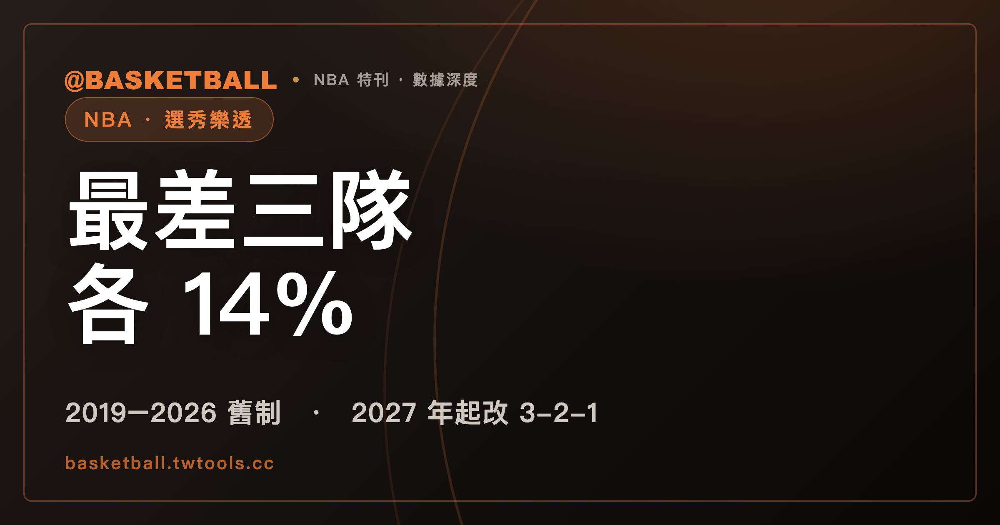

NBA 樂透：最差三隊各 14% 抽第 1 順位，2027 年選秀起改成 3-2-1 制
在 NBA 2019–2026 年選秀的樂透制度下，戰績最差的三隊各有 14% 的機會抽中第 1 順位，戰績最差的隊至多掉到第 5 順位。聯盟在 2026 年 5 月 28 日通過 3-2-1 制，2027 年選秀起把戰績最差的三隊「降級」，順位怎麼來又換了一套算法。

新手村｜制度入門・選秀與樂透
2026 年 NBA 選秀樂透的官方結果，第 5 順位那一行寫的是「LA Clippers (from Indiana)」。括號裡的 Indiana 是這個籤權的來源，寫在前面的 LA Clippers 才是持有它、拿它選人的球隊。順位表上的名字，因此不等於那支球隊自己的戰績。
這篇要主張的是：第 1 順位不等於戰績最差的球隊，順位表要讀兩層。第一層是機率。NBA 2019–2026 年選秀的樂透制度下，戰績最差的三隊各只有 14% 的機會抽中第 1 順位，最差的隊最低會排到第 5 順位；2027 年選秀起，聯盟改用 3-2-1 制，把戰績最差的三隊「降級」，機率又重排一次。第二層是名字：順位表上寫的是籤權的持有人，不是原來的球隊。讀完之後，你可以拿 2026 年的賠率表算出最差三隊合計的機率，也能判斷任何一張順位表上的名字該怎麼讀。
2026 年選秀有 60 個順位，因為規則綁的是球隊數
依 NBA 2023 年勞資協議（CBA），選秀共兩輪，每輪的選擇數等於下一季的球隊數。2026 年是 30 支球隊，所以是兩輪、60 個順位。NBA 官方 2026 年的說明頁也寫，每支球隊在第 1 輪與第 2 輪各有一個選擇權。
官方 2026 年順位表一路列到第 60 順位，那一行寫的是「Washington (from Oklahoma City via San Antonio and Miami)」。這個籤權經過 Oklahoma City、San Antonio、Miami 轉手，最後在 Washington 手上。第 5 順位的「from Indiana」不是特例，順位表本來就標示籤權從哪裡來。
60 是 2026 年 30 隊乘以 2 輪的結果，規則本身綁的是球隊數，不是一個固定的常數。選秀縮減為兩輪，則是 1989 年的事（依 NBA 官方說明頁的歷史沿革）。
第 1 輪的順位，為什麼會影響新秀的合約？
第 1 輪選中的球員，依 2023 年 CBA 簽的是 Rookie Scale Contract，中文常稱新秀合約。合約涵蓋兩季，球隊對第 3 季與第 4 季各有一個選擇權。
金額怎麼定？同一份 CBA 寫，第 1 輪球員的 Rookie Scale Amounts 由他在選秀中的順位決定。所以順位越前面，查到的是金額表上不同的一格。這篇不寫具體金額。想了解薪資怎麼受上限約束，可以看站內的薪資上限入門。
2026 年樂透抽 4 個順位，剩下的 56 個順位依戰績倒序排
NBA 2026 年選秀用的是 2019 年起實施的舊制。參加樂透的是 14 支沒進 2026 年季後賽的球隊，樂透決定第 1 輪前 14 個順位，但抽籤只決定前 4 個。
其餘的順位不抽籤：
- 第 5 到第 14 順位：剩下的樂透球隊，依 2025-26 年例行賽戰績倒序選人，戰績越差的隊越早選。
- 第 15 到第 30 順位：第 1 輪的其餘球隊，依例行賽戰績倒序。
- 第 31 到第 60 順位：整個第 2 輪，同樣依例行賽戰績倒序。
算一下：4 加 10、加 16、再加 30，總共 60。抽籤真正動用運氣的，只有 60 個順位裡的前 4 個。
抽籤的方法是 14 顆乒乓球、編號 1 到 14，從中抽 4 顆。4 顆球有 1,001 種組合（不計抽出的順序），其中 1,000 種在抽籤前分配給 14 支樂透球隊，各隊分到幾種，就是各隊的機率。舉例來說，14.0% 換算下來是 1,000 種組合裡的 140 種。
戰績最差的三隊各 14%，最差的隊至多掉到第 5 順位
NBA 理事會 2017 年 9 月 28 日通過樂透改制，從 2019 年選秀起實施。改制前，戰績最差的隊有 25% 的機會抽中第 1 順位，次差的隊 19.9%，第三差的隊 15.6%；最差的隊不會低於第 4 順位。改制後，NBA 官方說明頁寫得很清楚：戰績最差的三隊各有 14% 的機會，最差的隊不會低於第 5 順位。
為什麼是第 5？因為只抽前 4 個順位。戰績最差的隊如果沒被抽進前 4，就從第 5 順位開始，依戰績排在剩下的樂透球隊前面。
下面是 NBA 官方 2026 年樂透賠率表（舊制），數字是各隊抽中第 1 順位的機率：
| 球隊 | 2025-26 戰績 | 抽中第 1 順位的機率 |
|---|---|---|
| Washington | 17-65 | 14.0% |
| Indiana | 19-63 | 14.0% |
| Brooklyn | 20-62 | 14.0% |
| Utah | 22-60 | 11.5% |
| Sacramento | 22-60 | 11.5% |
| Memphis | 25-57 | 9.0% |
| New Orleans | 26-56 | 6.8% |
| Dallas | 26-56 | 6.7% |
| Chicago | 31-51 | 4.5% |
| Milwaukee | 32-50 | 3.0% |
| Golden State | 37-45 | 2.0% |
| LA Clippers | 42-40 | 1.5% |
| Miami | 43-39 | 1.0% |
| Charlotte | 44-38 | 0.5% |
先自己算一件事：把最上面三個 14.0% 加起來是 42%，也就是戰績最差的三隊合計有 42% 的機會抽中第 1 順位。
再看表：戰績排在表末的 Charlotte 只有 0.5%，但不是零；表上由上到下，機率一路遞減，戰績最差的三隊也只是各 14.0%，沒有任何一隊分到 100%。
2026 年第 5 順位寫著「LA Clippers (from Indiana)」，順位表上的名字是籤權持有人
回到開頭那一行。NBA 官方 2026 年 5 月 10 日公布的樂透結果，前 5 個順位是：
- Washington
- Utah
- Memphis
- Chicago
- LA Clippers (from Indiana)
拿這份結果對上面的賠率表：
- 第 1 順位：Washington，戰績 17-65，是 14 隊裡戰績最差的一隊，抽中的機率是 14.0%。所以 2026 年，最差的隊抽中第 1 順位。
- 第 2 順位：Utah，戰績 22-60，機率 11.5%。
- 第 3 順位：Memphis，戰績 25-57，機率 9.0%。
- 第 4 順位：Chicago，戰績 31-51，機率 4.5%。它的機率比前 3 名都低，卻抽到第 4。
第 5 順位要小心讀。Indiana 的戰績是 19-63，抽中第 1 順位的機率同樣是 14.0%。但官方順位表第 5 位的名字是 LA Clippers，括號才寫 from Indiana；賠率表上 Indiana 那一列，也用星號註記這個籤權可能轉給 LA Clippers。順位表上的名字是籤權的持有人，看不出那支球隊自己的戰績。
所以 2026 年的結果，不能用來證明「最差的隊掉到第 5」。最差的 Washington 抽中了第 1 順位，「至多第 5」這個下限，2026 年沒有出現在最差的隊身上。要判斷一個順位反映的是哪一隊的戰績，做法是先看括號：有 from 的，戰績要看括號裡那支球隊。2026 年選秀的實際選人結果，可以到站內的2026 年選秀結果查看。
2027 年選秀起，戰績最差的三隊被「降級」（draft relegated），少拿一顆樂透球
NBA 理事會 2026 年 5 月 28 日通過新的樂透制度，官方稱為 3-2-1 Lottery。聯盟表示，這套制度的目的是消除球隊把選秀順位放在贏球之前的誘因。
3-2-1 制從 2027 年選秀起適用，2026 年的選秀仍然用舊制。它把樂透從 14 隊擴大到 16 隊，並在沒進季後賽與附加賽（Play-In Tournament）的球隊之間壓平賠率。名字裡的 3、2、1，指的是每隊分到的樂透球（lottery ball）數：
| 球隊 | 樂透球 |
|---|---|
| 沒進季後賽、也沒進附加賽的隊 | 各 3 顆，但戰績最差的三隊被降級，各少 1 顆，拿 2 顆 |
| 東、西區各自的附加賽第 9、第 10 種子 | 各 2 顆 |
| 東、西區各自附加賽第 7 對第 8 種子的輸球方 | 各 1 顆 |
「降級」對應官方的英文 draft relegated，官方新聞稿說，這是為了提高球隊贏球的誘因。
16 隊的球全部拿來抽，決定第 1 輪前 16 個順位。降級的球隊至多掉到第 12 順位，其餘樂透球隊至多掉到第 16 順位。
官方一頁式說明還附了一張示意的賠率分布，標題就是 ILLUSTRATIVE ODDS DISTRIBUTION，前提是假設沒有球隊受到後面提到的第 1、前 5 順位限制。抽中第 1 順位的機率在那張圖上是：
| 球隊 | 抽中第 1 順位的示意機率 |
|---|---|
| 戰績最差的三隊（降級） | 5.4% |
| 其餘沒進附加賽的球隊 | 8.1% |
| 附加賽第 9、第 10 種子 | 5.4% |
| 附加賽第 7 對第 8 種子的輸球方 | 2.7% |
這是官方的示意圖，不是正式賠率。對照舊制：2026 年戰績最差的三隊各是 14.0%；新制的示意圖上，最差三隊的 5.4% 比其餘沒進附加賽的球隊還低。在這張示意圖裡，戰績最差不再帶來較高的第 1 順位機率。
第 2 輪也跟著改。官方一頁式說明寫，第 2 輪前 16 個順位依第 1 輪順位的倒序排，沒進樂透的球隊則依例行賽戰績倒序。
新制的限制跟著「各隊自己的籤」，不看籤現在在誰手上
3-2-1 制還加了三項規定，適用範圍要看清楚。
第一，連續年限制。 NBA 2026 年 5 月 28 日的新聞稿寫，任何一隊的籤，不得在連續兩年選秀中都是第 1 順位，也不得在連續三年選秀中都進前 5。這條限制只針對各隊自己的籤，不論那個籤是還在球隊手上，或已經交易給別隊。
用一個假設的例子判斷：假設 A 隊自己的籤在某一年抽中第 1 順位，那個籤當時已經交易到 B 隊手上。隔一年，A 隊自己的籤不得再是第 1 順位，就算它這時又換到 C 隊手上。限制跟著 A 隊的籤走，不跟著持有人走。
這和上一節的順位表恰好相反：順位表上寫的名字是持有人，這項限制看的卻是原來的球隊。讀規則時，先問清楚它問的是「籤是誰的」還是「現在誰拿著」。
第二，交易籤的保護限制。 球隊不能在新交易的籤上，附加前 12 到前 15 順位的保護條款。
第三，聯盟的處分權。 為了處理擺爛（tanking），聯盟的處分權擴大，包括降低球隊的樂透賠率、調整球隊的選秀順位、對違規球隊處以重罰。官方新聞稿沒有定義什麼行為算擺爛。
3-2-1 制官方只寫到 2029 年選秀，2030 年起由理事會表決
NBA 官方新聞稿寫，3-2-1 制適用於 2027、2028 與 2029 年選秀；2030 年起的選秀順位規則，由理事會表決決定。官方一頁式說明也寫著「SUNSET AFTER 2029 DRAFT」，意思是到期後要表決，決定繼續或改用新制度。這篇不寫 2030 年之後的制度。
也要留意舊資料：NBA 官方的樂透說明頁（2026 年 6 月 1 日更新）開頭就標明，頁面內容反映的是已完成的 2026 年樂透與 2026 年適用的舊制。你在網路上看到的賠率表、「最差隊至多第 5」這類說法，都要先對年份。
下次看到一張樂透賠率表或順位表，可以自己問三個問題：
- 這是哪一年選秀、哪一套制度？2019–2026 年是舊制，2027–2029 年是 3-2-1。
- 順位表上的名字，後面有沒有 from？有的話，戰績要看括號裡的球隊。
- 賠率是正式賠率，還是官方標明的示意？
想先認識聯盟與球隊，可以看站內的 NBA 完全指南。
常見問題
戰績最差的球隊，就會拿到第 1 順位嗎？
不會。NBA 2019–2026 年選秀用的舊制，戰績最差的三隊各有 14% 的機會抽中第 1 順位，最差的隊如果沒被抽進前 4，會從第 5 順位開始，至多掉到第 5。2027 年選秀起的 3-2-1 制，戰績最差的三隊被降級；官方一頁式說明的示意圖（假設沒有球隊受第 1、前 5 順位限制），最差三隊抽中第 1 順位的機率是 5.4%，不是正式賠率。
選秀有幾輪、幾個順位？
依 NBA 2023 年 CBA，選秀共兩輪，每輪的選擇數等於下一季的球隊數。2026 年是 30 支球隊，所以是兩輪、60 個順位，每隊每輪各有一個選擇權（依 NBA 官方 2026 年說明頁）。球隊數不同的年份，順位數要跟著算。
順位表上的「from」是什麼意思？
NBA 官方 2026 年樂透結果裡，第 5 順位寫的是「LA Clippers (from Indiana)」，前面的球隊是持有籤權、拿它選人的球隊，括號裡的是籤權的來源。順位表上的名字是持有人，不等於那支球隊自己的戰績；要看戰績，就看括號裡的球隊。
3-2-1 制從哪一年開始、到哪一年？
依 NBA 理事會 2026 年 5 月 28 日的新聞稿，3-2-1 制從 2027 年選秀起適用，涵蓋 2027、2028 與 2029 年選秀；2026 年的選秀仍是舊制。這份新聞稿對 2030 年起的規則只寫了由理事會表決。
資料來源
- NBA.com，〈NBA Draft Lottery explainer〉，頁面標示 2026 年 6 月 1 日更新：nba.com/nba-draft-lottery-expl…
- NBA Communications，〈NBA Board of Governors approves new Draft Lottery system to address tanking〉，Official Release，2026 年 5 月 28 日：pr.nba.com/nba-board-of-governors…
- NBA，〈3-2-1 Draft Lottery〉一頁式說明（PDF，2026 年 5 月）：ak-static.cms.nba.com/NBA-3-2-1-Draft-Lotter…
- NBA.com，〈NBA Board of Governors approves changes to Draft Lottery system〉，2017 年 9 月 28 日：nba.com/nba-board-governors-ap…
- NBA Communications，〈2026 NBA Draft Lottery results〉，Official Release，2026 年 5 月 10 日：pr.nba.com/2026-nba-draft-lottery…
- 2023 NBA Collective Bargaining Agreement，Article X Section 3(a)（選秀輪數與選擇數）、Article VIII Section 1(a)(b)（Rookie Scale Contract；僅核對 2023 年版，未核對後續修訂）：ak-static.cms.nba.com/2023-NBA-Collective-Ba…
「擺爛」「降級」「新秀合約」為中文慣用說法，官方英文分別是 tanking、draft relegated、Rookie Scale Contract。